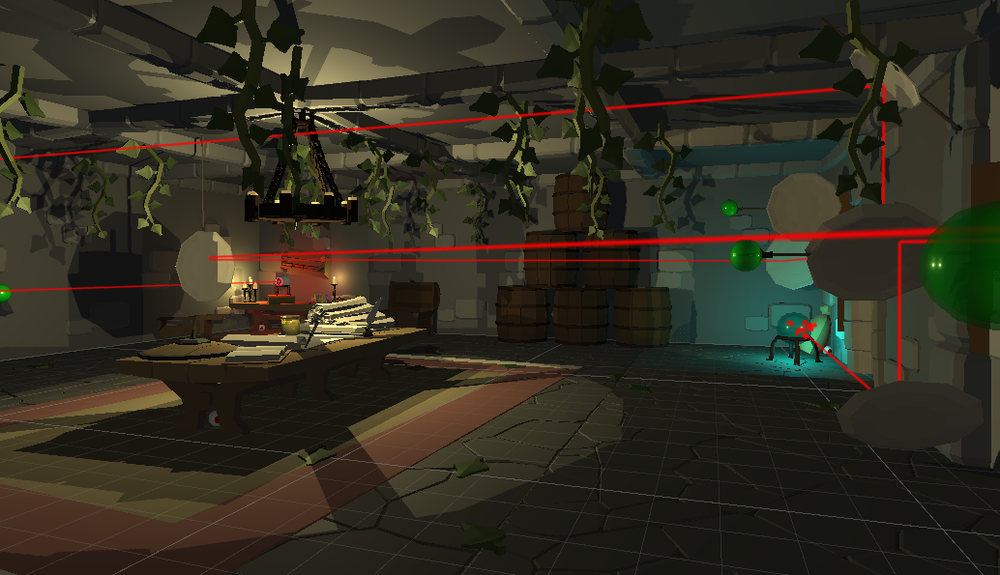
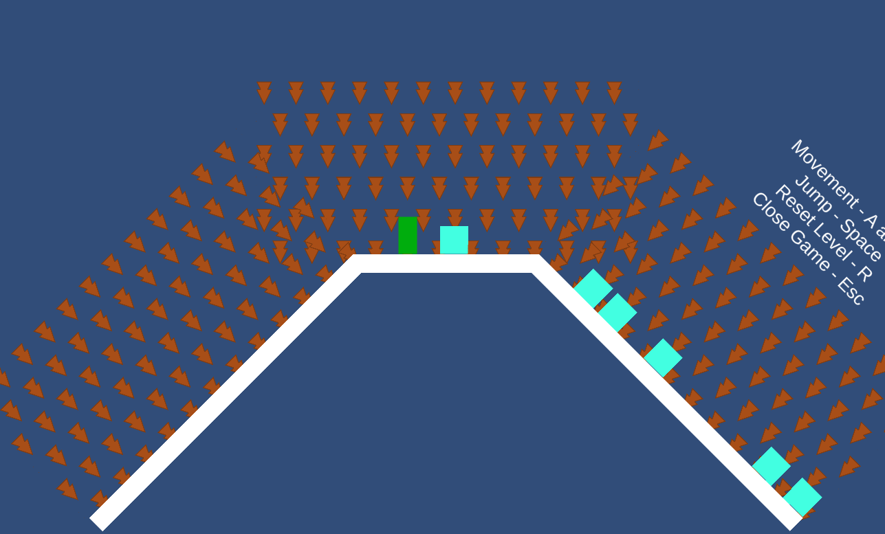
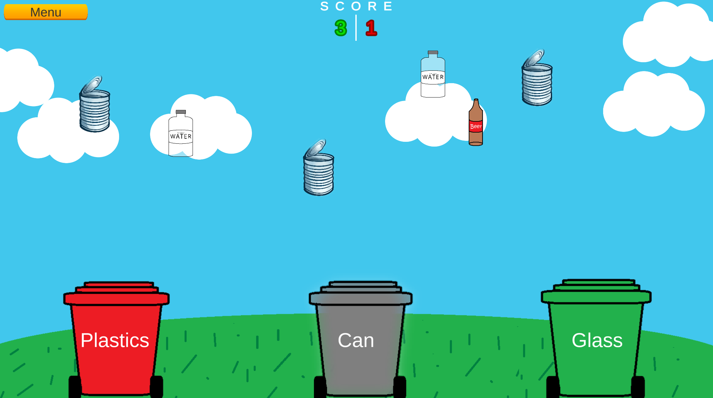
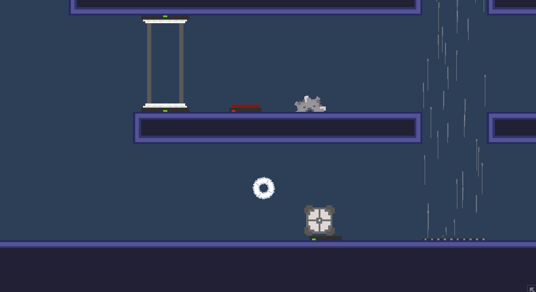

About Me
I'm Matt, recent graduate with First Class Honours in Computing (Games Programming) at Edge Hill University. Games development has been a passion of mine since roughly 2008, mainly thanks to the Nintendo Wii, though I have had a long time interest in video games as a whole. After a few years of dabbling with small text-based adventure games written in batch files from YouTube tutorials, I switched my focus to games with actual graphics. Between 2014 and 2016, I would make tiny, terrible games in the Unity game engine and RPG Maker. None were any good, nor were any finished, but each one taught me something new and forced me to face and solve new challenges.
I finally committed to an online course for Unity in 2017 which refined my foundation of YouTube tutorials and online guides into something of a somewhat higher quality. During this time, I completed high school and my GCSEs, giving me some more flexibilty in how much I could focus on my hobby and a bit more urgency for working out exactly what I was going to do after education. I took the Computing BTEC offered at West Lancashire college. My favourite modules were those focused on programming related skills - until now, all of my programming had been self-motivated and I had never programmed with an end goal or requirements in mind. Deadlines and requirements introduce a new challenge, but it was one I took head on, eventually graduating with a D*D*D*.
My final term in college aligned with the start of COVID. In a time where everything was uncertain, I continued to work on these skills and prepare for university. Finally being in education with a focus on programming, specifically games, was exhilirating and allowed me to further build those skills I'd been cultivating for a decade. With new friends who shared these interests, I took on the three years with head held high despite the circumstances of first year and the stressful nights all throughout. Despite it all, I graduated July 2023 with a First Class Honours degree in Computing (Games Programming) and am more excited than ever to see what the world has for me next.
About This Page
This page serves as an online portfolio of my work, collected from both university projects and personal projects. You'll have to excuse the simplistic design - I'm a programmer at heart, not a designer!
Academic Projects
VR Escape Room - Laser Puzzle
As part of a second year module on using games engines, a virtual reality puzzle game was created among a team of developers. I was one in a team of four working on this project and was involved in the wider thematic planning of the game and responsible for the planning, implementation, and creation of my own puzzle room within the game. This process expanded my ability to work with others and make use of assets not made by myself (A welcome change as I am no artist).
My section of the game was built around a reflecting laser puzzle where the player must translate reflecting dishes along a defined axis to influence the laser's path. Inspiration was drawn from laser puzzles featured in Half Life and My Sims Agents The puzzle is intentionally simple and understandable as it was designed with first-time VR users in mind. This approach also encourage level design which silent introduced the player to what must be done - for example, the movement nodes are a noticeable green, and the laser origin and end point are bright and obvious.
Gravity Platformer
Gravity Platformer refers to a series of prototypes produced as part of my final Research and Development module in university. Two 2D and one 3D prototype were produced inspired by the mecahnics of the gravity interactions of Kerbal Space Program, Super Mario Galaxy, and Angry Birds Space, among others.
While the 3D prototype was never fully realised due to time constraints, the second 2D prototype presents a decent implementation of the mechanics, including multiple gravity types and non-player rigidbody interaction.
Sadly, no final and polished product was able to achieved, but the project was an amazing learning experience and one I would love to revist in future.
Save the Environment: A Recycling Game
Save the Environment was a team game produced as part of an employability module in university. Within this team, I acted as the primary programmer, writing much of the code for the project, while other members focused on art assets, team co-ordination, and documentation tasks. The game, aimed at younger audiences, was designed as a fun way to encourage correct recylcing habits, where the player must match materials, like glass or plastic, into the correct waste bin.
Due to a short time frame given for the project and other, larger projects requiring more attention, my time management skills were pushed. Despite this, the game was completed on time and to a standard the team was happy with. If given more time, there were many more ideas, such as leaderboards and multiple game modes, that we would have loved to implement, but given the constraints, we deemed them not to be important enough in this case.
Personal Projects
Colour Wheel (Working Title)
 VideoColour Wheel is a work-in-progress personal size-scrolling puzzle-platformer game inspired by the Portal franchise and Super Meat Boy. The primary focus of the game was to give me something to work on in my free time post-graduate to maintain and develop my skillset.
The project is still very early days, but a public web-based demo build featuring a few of the implemented puzzle mechanics and a somewhat unique rotation based movement system is available on my itch.io page.